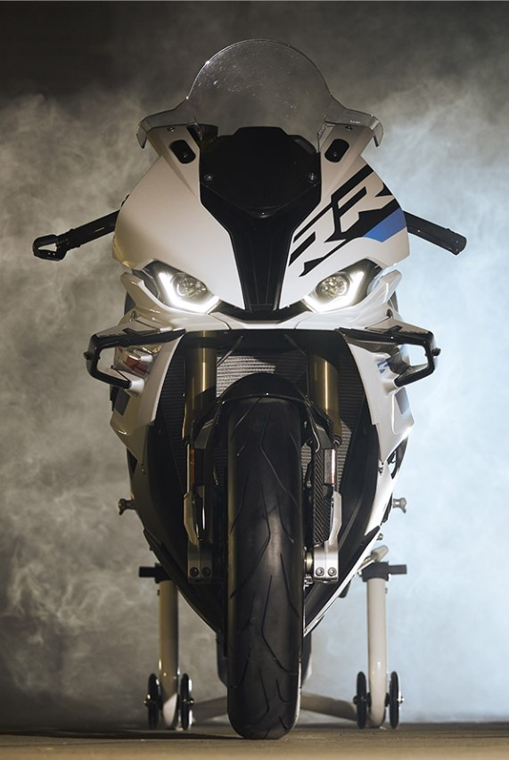

La RR est désormais encore plus concentrée et plus précise sur les performances pures. Pour tous ceux qui en veulent toujours plus. D’eux-mêmes. De chaque tour de piste. Et de leur RR. Dans l’esprit de #NeverStopChallenging. C’est précisément là où la RR se déplace depuis toujours que la conduite est un travail au millimètre. C’est pourquoi nous avons affûté et perfectionné la RR aux endroits décisifs : du nouveau capteur d’angle de braquage avec Brake Slide Assist et Slide Control, ainsi que l’intégration de composants M, jusqu’aux gestes décisifs pour la transformation de la moto pour la piste, en passant par des améliorations dans l’électronique. Et tout cela avec un objectif clair : de nouvelles pole positions.

Super sportif et résolument compact. Nous avons conservé ces valeurs de conception de base du RR. De plus, nous les avons rendus encore plus nets : depuis la partie avant avec le pare-brise optimisé sur le plan aérodynamique et les feux au design LED saisissant, jusqu'aux panneaux latéraux avec aileron et à la partie arrière courte et dynamique. De plus, le support de plaque d'immatriculation facilement amovible et le cache-bosse arrière en option pour le siège passager prouvent que nous avons même axé la conception de la RR sur la performance jusque dans les moindres détails.
